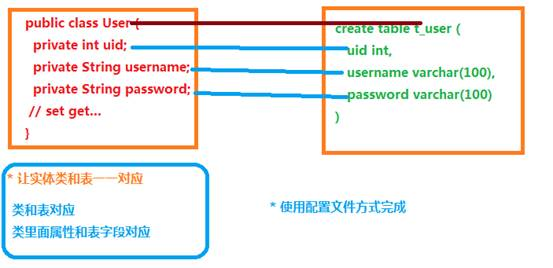
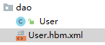
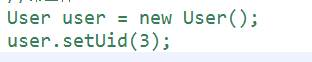
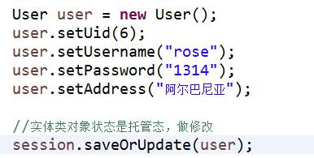
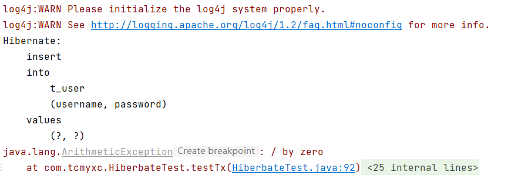
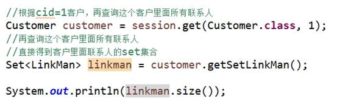
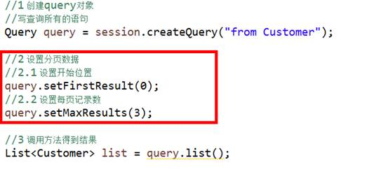
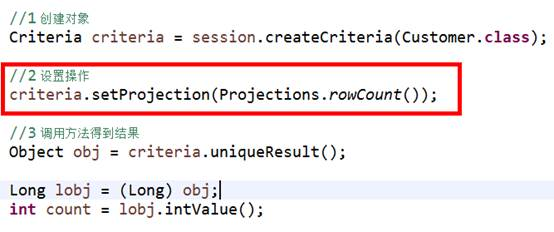

Hibernate学习¶
是什么？¶
hibernate框架应用在javaee三层结构中 dao层框架
hibernate底层代码就是jdbc，hibernate对jdbc进行封装，使用hibernate好处，不需要写复杂jdbc代码了， 不需要写sql语句实现
开源的轻量级的框架
ORM思想¶
orm：object relational mapping，对象关系映射 文字描述： （1）让实体类和数据库表进行一一对应关系 让实体类首先和数据库表对应 让实体类属性 和 表里面字段对应 （2）不需要直接操作数据库表，而操作表对应实体类对象
**
 **
**
入门¶
搭建一个demo¶
1、使用IDEA创建一个Maven工程¶
添加依赖
<!-- https://mvnrepository.com/artifact/org.hibernate/hibernate-core -->
<dependency>
<groupId>org.hibernate</groupId>
<artifactId>hibernate-core</artifactId>
<version>5.5.0.Final</version>
</dependency>
<dependency>
<groupId>mysql</groupId>
<artifactId>mysql-connector-java</artifactId>
<version>8.0.16</version>
</dependency>
<dependency>
<groupId>log4j</groupId>
<artifactId>log4j</artifactId>
<version>1.2.17</version>
</dependency>
<!-- https://mvnrepository.com/artifact/junit/junit -->
<dependency>
<groupId>junit</groupId>
<artifactId>junit</artifactId>
<version>4.13.1</version>
<scope>test</scope>
</dependency>
解决编译时资源文件不生效的问题：
<build>
<!--默认打包资源文件-->
<resources>
<resource>
<directory>src/main/java</directory>
<includes>
<include>**/*.xml</include>
</includes>
</resource>
</resources>
</build>
2、写个实体类¶
public class User {
private int uid;
private String username;
private String password;
public User(int uid, String username, String password) {
this.uid = uid;
this.username = username;
this.password = password;
}
public User() {
}
public int getUid() {
return uid;
}
public void setUid(int uid) {
this.uid = uid;
}
public String getUsername() {
return username;
}
public void setUsername(String username) {
this.username = username;
}
public String getPassword() {
return password;
}
public void setPassword(String password) {
this.password = password;
}
}
3、写实体类对应的配置文件¶
建议：在实体类所在包里面创建，实体类名称.hbm.xml

<?xml version="1.0"?>
<!--
~ Hibernate, Relational Persistence for Idiomatic Java
~
~ License: GNU Lesser General Public License (LGPL), version 2.1 or later.
~ See the lgpl.txt file in the root directory or <http://www.gnu.org/licenses/lgpl-2.1.html>.
-->
<!DOCTYPE hibernate-mapping PUBLIC
"-//Hibernate/Hibernate Mapping DTD 3.0//EN"
"http://www.hibernate.org/dtd/hibernate-mapping-3.0.dtd">
<hibernate-mapping package="com.tcmyxc.dao">
<!-- 配置类名和表名的映射关系-->
<class name="User" table="t_user">
<id name="uid" column="uid">
<!--配置主键自增长-->
<generator class="native"/>
</id>
<!--配置类属性和表结构中列名的对应关系，不填就一模一样-->
<property name="username"/>
<property name="password"/>
</class>
</hibernate-mapping>
4、创建hibernate的核心配置文件¶
名字是固定的：hibernate.cfg.xml
<?xml version='1.0' encoding='utf-8'?>
<!--
~ Hibernate, Relational Persistence for Idiomatic Java
~
~ License: GNU Lesser General Public License (LGPL), version 2.1 or later.
~ See the lgpl.txt file in the root directory or <http://www.gnu.org/licenses/lgpl-2.1.html>.
-->
<!DOCTYPE hibernate-configuration PUBLIC
"-//Hibernate/Hibernate Configuration DTD 3.0//EN"
"http://www.hibernate.org/dtd/hibernate-configuration-3.0.dtd">
<hibernate-configuration>
<session-factory>
<!-- Database connection settings -->
<property name="connection.driver_class">com.mysql.cj.jdbc.Driver</property>
<property name="connection.url">jdbc:mysql:///mytest?serverTimezone=UTC</property>
<property name="connection.username">root</property>
<property name="connection.password">123456</property>
<!--可选配置-->
<!-- JDBC connection pool (use the built-in) -->
<property name="connection.pool_size">1</property>
<!-- SQL dialect -->
<property name="dialect">org.hibernate.dialect.MySQL8Dialect</property>
<!-- 输出 sql 语句 -->
<property name="show_sql">true</property>
<!--sql 语句格式化-->
<property name="format_sql">true</property>
<!-- 自动创建表
update: 没有则创建，有则更新
-->
<property name="hbm2ddl.auto">update</property>
<!--引入映射文件-->
<mapping resource="com/tcmyxc/dao/User.hbm.xml"/>
</session-factory>
</hibernate-configuration>
5、测试¶
第一步 加载hibernate核心配置文件
第二步 创建SessionFactory对象
第三步 使用SessionFactory创建session对象
第四步 开启事务
第五步 写具体逻辑 crud操作
第六步 提交事务
第七步 关闭资源
@Test
public void testAdd(){
Configuration cfg = new Configuration();
cfg.configure();
SessionFactory sessionFactory = cfg.buildSessionFactory();
Session session = sessionFactory.openSession();
Transaction transaction = session.beginTransaction();
User user = new User();
user.setUsername("xwx");
user.setPassword("123456");
session.save(user);
transaction.commit();
session.close();
}
Hibernate核心api¶
Configuration¶
找到名称hibernate.cfg.xml配置文件，创建对象，把配置文件放到对象里面（加载核心配置文件）
SessionFactory¶
1 使用configuration对象创建sessionFactory对象 （1）创建sessionfactory过程中做事情：
- 根据核心配置文件中，有数据库配置，有映射文件部分，到数据库里面根据映射关系把表创建
2 创建sessionFactory过程中，这个过程特别耗资源的 （1）在hibernate操作中，建议一个项目一般创建一个sessionFactory对象
3 具体实现 （1）写工具类，写静态代码块实现
- 静态代码块在类加载时候执行，执行一次
public class SessionFactoryUtil {
private static Configuration cfg = null;
private static SessionFactory sessionFactory = null;
// 静态代码块保证只被加载一次
static {
cfg = new Configuration();
cfg.configure();
sessionFactory = cfg.buildSessionFactory();
}
// 提供一个静态方法
public static SessionFactory getSessionFactory(){
return sessionFactory;
}
}
Session¶
1 session类似于jdbc中connection
2 调用session里面不同的方法实现crud操作 （1）添加 save方法 （2）修改 update方法 （3）删除 delete方法 （4）根据id查询 get方法
3 session对象单线程对象 （1）session对象不能共用，只能自己使用
增删改查那些事¶
Hibernate实体类编写规则¶
1 实体类里面属性私有的
2 私有属性使用公开的set和get方法操作
3 要求实体类有属性作为唯一值（一般使用id值）
4 实体类属性建议不使用基本数据类型，使用基本数据类型对应的包装类 （1）八个基本数据类型对应的包装类
- int – Integer
- char—Character、
- 其他的都是首字母大写 比如 double – Double （2）比如 表示学生的分数，假如 int score;
- 比如学生得了0分 ，int score = 0;
- 如果表示学生没有参加考试，int score = 0;不能准确表示学生是否参加考试
- 解决：使用包装类可以了， Integer score = 0，表示学生得了0分，表示学生没有参加考试，Integer score = null;
主键生成策略¶

<!--配置主键自增长-->
<generator class="native"/>
查询操作¶
根据 id 查询
User user = session.get(User.class, 2);System.out.println(user);
修改操作¶
User user = session.get(User.class, 2);System.out.println(user);user.setPassword("nihao");session.update(user);User user2 = session.get(User.class, 2);System.out.println(user2);
删除操作¶
User user = session.get(User.class, 2);System.out.println(user);// 测试删除操作session.delete(user);User user2 = session.get(User.class, 2);System.out.println(user2);

其他的概念¶
实体类对象状态¶
实体类状态有三种
（1）瞬时态：对象里面没有id值，对象与session没有关联

（2）持久态：对象里面有id值，对象与session关联

（3）托管态：对象有id值，对象与session没有关联

saveOrUpdate方法：实现添加、实现修改



缓存¶
hibernate缓存特点：
第一类 hibernate的一级缓存
（1）hibernate的一级缓存默认打开的
（2）hibernate的一级缓存使用范围，是session范围，从session创建到session关闭范围
（3）hibernate的一级缓存中，存储数据必须 持久态数据
第二类 hibernate的二级缓存
（1）目前已经不使用了，替代技术 redis
（2）二级缓存默认不是打开的，需要配置
（3）二级缓存使用范围，是sessionFactory范围
 **
**
事务代码规范写法¶
代码结构
try { 开启事务 提交事务}
catch() { 回滚事务}
finally { 关闭}
@Test
public void testTx() {
SessionFactory sessionFactory = null;
Session session = null;
Transaction tx = null;
try {
sessionFactory = HibernateUtils.getSessionFactory();
session = sessionFactory.openSession();
//开启事务
tx = session.beginTransaction();
//添加
User user = new User();
user.setUsername("小马");
user.setPassword("250");
user.setAddress("美国");
session.save(user);
int i = 10/0;
//提交事务
tx.commit();
}catch(Exception e) {
e.printStackTrace();
//回滚事务
tx.rollback();
}finally {
//关闭操作
session.close();
sessionFactory.close();
}
}

回顾表和表之间的关系¶
一对多：分类和商品关系，一个分类里面有多个商品，一个商品只能属于一个分类
多对多：订单和商品关系，一个订单里面有多个商品，一个商品属于多个订单
多对多建表：创建第三张表维护关系

查询方式介绍¶
对象导航查询¶
（1）根据id查询某个客户，再查询这个客户里面所有的联系人

OID查询¶
（1）根据id查询某一条记录，返回对象

HQL查询¶
HQL，即hibernate query language，hibernate提供一种查询语言，hql语言和普通sql很相似
区别：普通sql操作数据库表和字段，hql操作实体类和属性
常用的hql语句
（1）查询所有： from 实体类名称
（2）条件查询： from 实体类名称 where 属性名称=?
（3）排序查询： from 实体类名称 order by 实体类属性名称 asc/desc
使用hql查询操作时候，使用Query对象
（1）创建Query对象，写hql语句
（2）调用query对象里面的方法得到结果
查询所有¶

条件查询¶
分页查询¶
在hql操作中，在语句里面不能写limit，hibernate的Query对象封装两个方法实现分页操作

投影查询¶
投影查询：查询不是所有字段值，而是部分字段的值
投影查询hql语句写法：
（1）select 实体类属性名称1, 实体类属性名称2 from 实体类名称
（2）select 后面不能写 *，不支持的
具体实现：
QBC查询¶
1、使用hql查询需要写hql语句实现，但是使用qbc时候，不需要写语句了，使用方法实现
2、使用qbc时候，操作实体类和属性
3、使用qbc，使用Criteria对象实现
查询所有¶
条件查询¶

分页查询¶

统计查询¶

本地sql查询¶
SQLQuery对象，使用普通sql实现查询
servlet调用service，service调用dao
（1）在dao里面对数据库crud操作
（2）在dao里面使用hibernate框架，使用hibernate框架时候，调用session里面的方法实现功能
多表查询¶
迫切内连接
（1）迫切内连接和内连接底层实现一样的
（2）区别：使用内连接返回list中每部分是数组，迫切内连接返回list每部分是对象
（3）hql语句写法：from Customer c inner join fetch c.setLinkMan
检索策略¶
检索策略分为两类：
（1）立即查询：根据id查询，调用get方法，一调用get方法马上发送语句查询数据库
（2）延迟查询：根据id查询，还有load方法，调用load方法不会马上发送语句查询数据，只有得到对象里面的值时候才会发送语句查询数据库
延迟查询分成两类：
（1）类级别延迟：根据id查询返回实体类对象，调用load方法不会马上发送语句
（2）关联级别延迟：查询某个客户，再查询这个客户的所有联系人，查询客户的所有联系人的过程是否需要延迟，这个过程称为关联级别延迟
批量抓取
查询所有的客户，返回list集合，遍历list集合，得到每个客户，得到每个客户的所有联系人
在客户的映射文件中，set标签配置 batch-size值，值越大发送语句越少